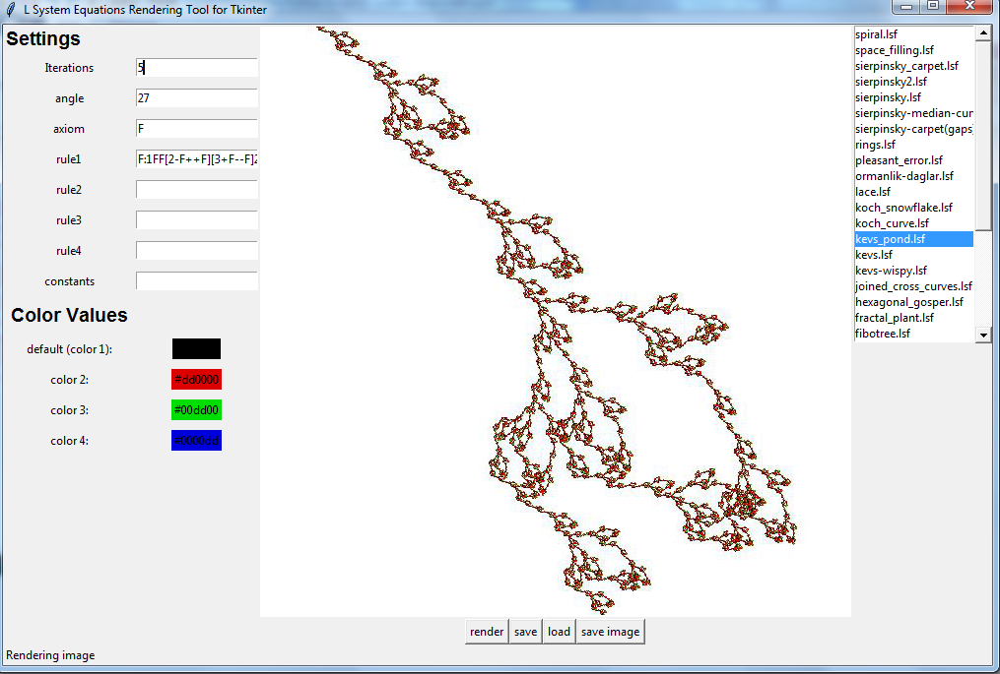

L-System aracı güncellemeleri
Geçen gün blog'da L-System çizmek için yazdığım bir programı tanıtmıştım. Bazı geliştirmeler yaptım, onlardan da bahsedeyim istedim. Arayüzün şu anki görüntüsü şu şekilde

Öncelikle, geçen gün paylaştığım versiyonu, sadece PIL ile çizim yapıyordum. Artık PIL kütüphanesini bulamıyorsa, doğrudan tkinter Canvas'ı üzerine çizim yapıyor. Ancak, bunun birkaç dezavantajı var. Öncelikle, canvas'a yapılan çizimleri resim dosyası olarak kaydedemiyorsunuz. Ayrıca, PIL ile çizime nazaran bariz olarak daha yavaş çizim yapıyor. Ayrıca, resim dosyası olarak kaydedilemediği için, çizimleri cache'le imkanımız olmuyor.
Cache'leme değişken, geçen günkü versiyonda bu da yoktu. Artık l-sistem'den türetilmiş stringleri ve eğer PIL varsa, çizilmiş resimleri de cacheliyoruz. Böylece, program biraz hızlı çalışır hale geldi.
Ayrıca, eğer çok komplex bir sistem çiziyorsanız, örneğin iteration sayısı çok fazlaysa, arayüz donuyor ve (Yanıt Vermiyor) durumuna düşüyordu. Bunu önlemek için, l-sistem'de string türetmeyi ve resim oluşturmayı ayrı thread'lere dağıttım. Böylece, artık komplex resimler oluştururken ekran donmuyor. Bir çizim bitmeden, iptal edip başka bir çizime geçme şansımız da oluyor. Ayrıca, status bar'da koydum, o anda ne yapıldığını görebiliyoruz.
Son olarak, programın içinde gelen örnekleri biraz güncelledim.
Haydi Kalın Sağlıcakla
PS: Kodlar github deposunda